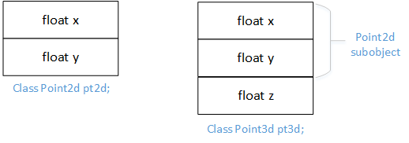
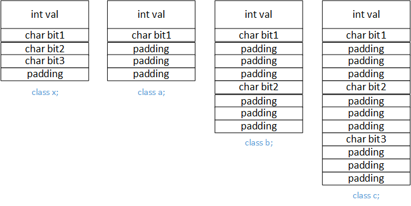
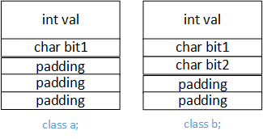
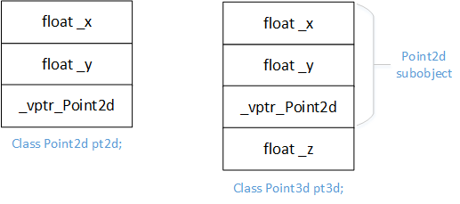
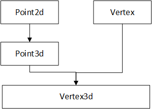
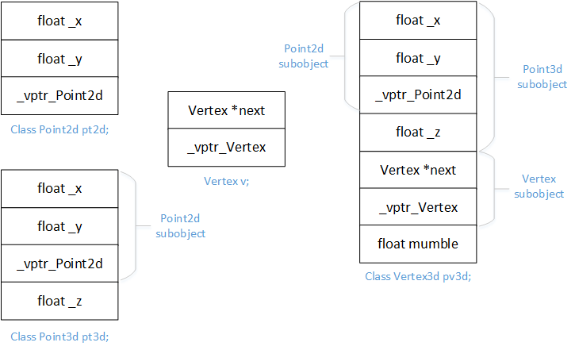
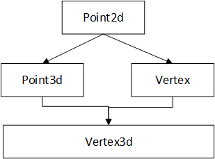
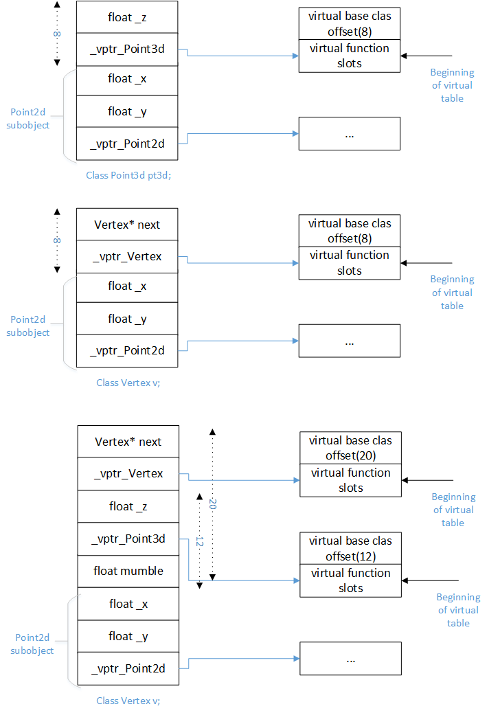

C++数据成员语意学
空类不空，本文通过分析C++类对象的大小、数据成员的绑定等来分析类的数据成员语意。
空类的大小
为了使该类的对象能够在内存中配置独一无二的地址，编译器会安插一个char字符到空类内部。
1 | class Empty{ }; /* sizeof(Empty) == 1; */ |
每一个类对象必须有足够的大小以容纳它所有的non-static数据成员，其大小和以下原因有关：
- 由编译器自动加上的额外数据成员，用以支持某这些语言特性（空类、virtual特性）；
- 由于内存对齐的需要，需要增加额外的填充字节。
下面给出C++面向对象模型中的经典例子：1
2
3
4class X{ };
class Y : public virtual X{ };
class Z : public virtual Y{ };
class A : public Y, pulbic Z{ };
不同的处理器在处理上面的例子表现出不同的结果，大致可以分为两类：
- 针对empty virtual base class做了优化的编译器，例如Visual C++；
- 未针对empty virtual base class做出优化的编译器。
未针对empty virtual base class做出优化的编译器
Y or Z的大小 = sizeof(virtual base class pointer) + sizeof(char) + sizeof(3 bytes padding) = 8; // 1 char because Y or Z is empty
A的大小 = sizeof(virtual base class pointer)*2 + sizeof(X’s char) + sizeof(3 bytes padding) = 12;
针对empty virtual base class做了优化的编译器
Y or Z的大小 = sizeof(virtual base class pointer) = 4; // empty virtual base class X is regarded as the beginning of class Y and Z
A的大小 = sizeof(virtual base class pointer)*2 = 8; // 1 char of class X is removed
数据成员的绑定
对类成员函数本身的分析，会直到整个class的生命都出现了才开始，因此一个inline成员函数函数体内的数据成员的绑定操作会在整个class声明完成之后才发生。
如下例，X()函数返回的是数据成员x而不是，extern int x。1
2
3
4
5
6
7extern int x;
class Point{
public:
float X() const { return x; }
private:
float x;
};
对于类成员函数的参数列表来说，上面的结论是不成立的，看看下面的例子：1
2
3
4
5
6
7
8
9
10
11
12
13extern float _val;
typedef int length;
class Point{
public:
// length被编译器认为是global
// _val被决议为Point3d::val
void numble(length val) { _val = val; }
length numble() { return _val; }
private:
// length应该在类的最前面声明
typedef float length;
length _val;
}
参数列表中的名称还是会在他们第一次遭遇时被适当地决议完成，故上面的成员函数中的length是global的，_val的类型是float。
数据成员的存取
静态数据成员
类的静态数据成员只有一个实体，其存取不会导致空间上或执行时间上的额外负担。
非静态数据成员
非静态数据成员存在于每一个对象实体内部，通过隐含的this指针来存取。欲对一个非静态数据成员进行存取操作，编译器需要把对象起始地址加上数据成员的偏移量。对于每个类来说，该偏移量都能在编译时期获得。
数据成员在继承体系中的布局
只要继承不要多态
单一继承而且没有虚函数存在，这个时候的内存布局相对来说是最简单的。来看下面的例子：1
2
3
4
5
6
7
8class Point2d{
protected:
float x, y;
};
class Point3d: public Point2d{
protected:
float z;
};
类Point2d和Point3d的内存布局如下：

这种继承关系并没有带来额外的内存损耗，但是下面的例子为了表现类体系之抽象化，由于内存对齐浪费了很多内存：1
2
3
4
5
6
7
8
9
10
11
12
13
14
15
16
17
18
19
20class x{
private:
int val;
char bit1;
char bit2;
char bit3;
};
class a{
private:
int val;
char bit1;
};
class b : public a{
private:
char bit2;
}
class c : public b{
private:
char bit3;
}
类x、a、b、c的内存布局如下：

为什么会不把多余的填充字节去掉呢？如果把派生类成员和基类子对象捆绑在一起，除去填充字节会发生什么？这个时候如果派生类对象给其基类子对象进行复制操作时会破坏派生类数据成员。

如上图所示，如果对b的基类子对象进行复制操作，bit2的值一定会被填充字节破坏掉。
带有多态的继承
多态给类带来空间和存取时间的额外负担：
- 虚表virtual table
- 虚表指针vptr
- constructor需要为vptr设定初值
- destructor需要析构vptr
请看下例：1
2
3
4
5
6
7
8
9
10
11
12class Point2d{
public:
virtual float Z() const;
protected:
float x, y;
};
class Point3d: public Point2d{
public:
virtual float Z() const;
protected:
float z;
};
上例中引入了虚函数，C++标准没有规定虚函数指针在内存布局中的位置，这都是由编译器决定。Point2d和Point3d这种单一继承并含有虚函数情况下的内存布局如下：

多重继承
多重继承的问题主要发生于派生类和其第二个或后继的基类对象之间的转换，考虑下面的继承体系。

其内存布局如下：

虚拟继承
考虑如下继承体系：

其内存布局如下：

本文作者：ZeroJiu
本文链接： https://www.freehacker.cn/foundation/the-semantics-of-data/
版权声明：本博客所有文章除特别声明外，均采用 CC BY-NC-SA 3.0 CN 许可协议。转载请注明出处！
温馨提示：开启科学上网访问本站，能获得更好的阅读体验，并启用Disqus评论功能和作者交流。